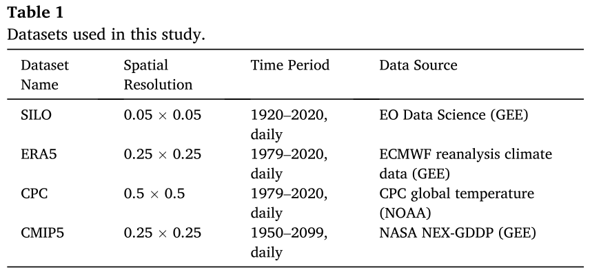
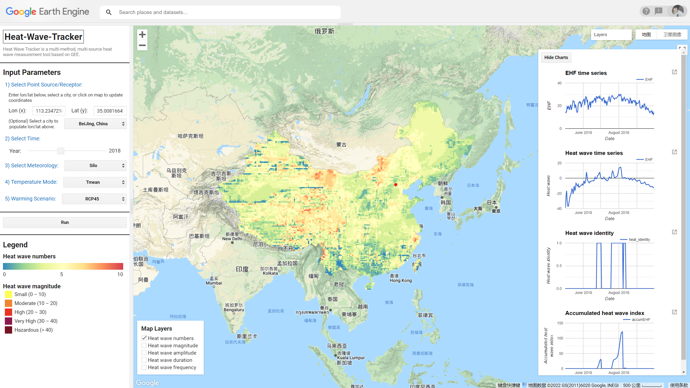

Further Information
工作汇报 会议纪要汇报时间： 2022/03/04，14:00-17:30
汇报范围： 2022/02/21 - 2022/03/04
会议纪要：
① 问一下庄伟陕西省气象局的气象预报数据分辨率是多少，根据过去理赔的情况，把保险和高温低温等灾害性天气结合在一起；
② 历史数据分析没意义，要做预报，为农民提供数据，推送数据。
③ 在省级尺度上做，不建议做国家级的。如果做到很精细化，数据量太大。
④ 产出更精细化的地图产品，heatwave、低温等产品，结合农业保险来做，做的文章就更好。气象预报格点产品，生成更精细化的产品。
⑤ 从技术上来做的同时，还要考虑论文怎么写。
⑥ 先有一些产品，先有一些 Results，再想怎么分析，怎么写文章。
⑦ 陕西省气象预报数据，站点数据，做一个时间序列数据。和其他因子关联起来，地形因子，植被指数，关联起来，建一个模型，R语言包可以自动优选。
⑧ 看看 Heatwave-R 包，看看是源码是怎么算的。（这个 R 包是针对站点算的，GEE 里的代码是针对栅格网算的）
汇报内容：
① 重新梳理了一下张明希师兄的 Heatwave 文章中用到的数据和方法：
Data:
SILO：昆士兰环境与科学部 (DES) 主办的 1889 年至今的澳大利亚气候数据库。这些数据集是根据从澳大利亚气象局 (BoM) 获得的观测数据构建的。
ERA5：最新的第五代 European Centre for Medium-Range Weather
Forecasts）
（再分析气候数据（ERA5）。
CPC：1979 年至今的全球每日温度数据集。在本研究中，CPC 数据集 netCDF4 文件已使用 R 脚本转换为 GeoTIFFs 格式，并上传到 GEE 目录中。（暂未用到）
CMIP5：预测数据，在 GEE 数据目录中，NASA NEX 数据集包含CMIP5 下 21 个 GCM 在两种温室气体排放情景下的每日缩减预测。CMIP5 参考期（1975-2005）和预测期（2006-2100）包含每日最高和最低温度。
Methods:
1）核心算法是基于一个通用的热波框架，采用三种单独的热波识别方法(每日最低温度、最高温度及过量热系数)，以固定和动态阈值作为基线，确定一个连续至少三天超过阈值的热波事件。对于每个格点，计算了11月至3月澳大利亚暖季的3个热浪指数。这些指数包括：
三个热浪指数：
（1）TX90pct：基于居中的 15 天窗口（即日历日前后 7 天），日历日 Tmax 的第 90 个百分位数。计算每个时间段和网格点的阈值。
（2）TN90pct：Tmin 在日历日的第 90 个百分位，与 Tmax 相同的时间段和单位。
（3）EHF（过热系数）：EHF 是基于 Tmean 的两个指标的乘积：EHIsig 和 EHIaccl。
五个热浪指数：
（1） 热浪数量（HWN）——离散热浪事件的总数； （2） 热浪持续时间（HWD）——最长热浪事件的长度； （3） 热浪频率（HWF）——满足正热浪值的天数总和； （4） 热浪幅度（HWA）——峰值幅度（一个季节中热浪的最高值）； （5） 热浪量级（HWM）——平均幅度（所有热浪的平均幅度）；
其中，HWM 和 HWA 是热浪强度的量度，而 HWD、HWF 和 HWN 是热浪持续时间的量度。
2）非平稳广义极值分析
② 修改师兄发来的“EHI_Sig_ERA5.js”
代码，用来生成 EHF 数据；
③ 澳洲夏季为 11-01 ~ 04-01（151天）
，将代码修改为中国的夏季时间 05-01 ~
10-01（153天）
;
④ ERA5 数据中的温度是华氏度，需要在代码中进一步转换为摄氏度；
⑤ 代码中所用到的 "USDOS/LSIB_SIMPLE/2017"
边界数据集，在中印争议区域存在一些问题，所以替换成自己的边界数据来做。
问题：1. 西部的阿克赛钦地区
，虽然数据集没有让它属于中国，但是可以单独 select 进来；2.
西南的藏南地区（阿鲁纳恰尔邦）
直接划给了印度，无法单独 select 进来，比较难搞。所以用了中国认可的边界数据。
P95:
Threshold_P95_SILO.js
代码计算得到的
“Aus_Tmean_60_90_P95”
就是
P95，即 “CN_ERA5_P95”
；
TX90 / TN90:
TX90_TN90.js
代码
“select('minimum_2m_air_temperature')”
计算得到的是
TN90，即
“CN_ERA5_TN90”
；“select('maximum_2m_air_temperature')”
计算得到的是 TX90，即 “CN_ERA5_TX90”
；
EHF：由 “EHI_Sig_ERA5.js”
生成，即
“Merged_EHF_2018”
；
⑥ 最终运行结果： 
⑦ 列出一些代码的修改：
ERA5 华氏度转为摄氏度（处理较慢）：
// Convert to ℃
var era5 = ERA5_image.map(function(img) {
var Tmax = img.select('maximum_2m_air_temperature').subtract(ee.Image(273.15));
var Tmin = img.select('minimum_2m_air_temperature').subtract(ee.Image(273.15));
var Tmean = img.select('mean_2m_air_temperature').subtract(ee.Image(273.15));
var tempimage = ee.Image(Tmax.addBands(Tmin).addBands(Tmean));
return tempimage.copyProperties(img, img.propertyNames());
});取中国 夏季（2018-05-01 ~ 2018-10-01） 的数据：
// 取 'year-05-01' 开始到 153 天后的 era5 数据
function era5temp(year){
var stryear = year.toString();
var start = stryear.concat('-05-01');
start = ee.Date(start);
var end = start.advance(5,'month');
var yearofera5 = ee.ImageCollection(era5).filterDate(start, end);
return yearofera5;
}⑧ 后续工作安排：
1）将计算热浪改为计算低温，以 10% 的阈值；
2）目前只是跑通了 mainUI.js 可视化界面默认的一组数据，还有其他组数据有待进一步跑通，以及考虑这些数据和结果后续怎么使用和分析。